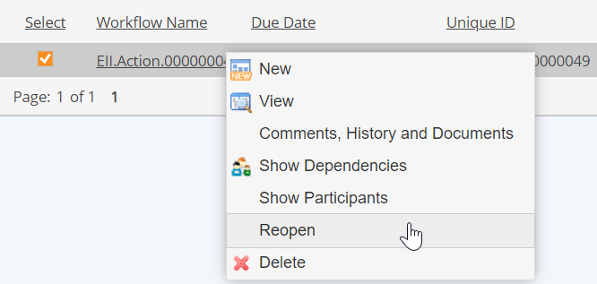
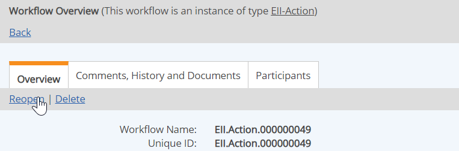

To reopen a workflow, you must have Reopen permission for the workflow, granted through any role you are a member of in the workflow, or have Manage Workflows right.
To reopen a closed workflow:
From the Workflows page (Tasks and Workflows page), right click the workflow and choose Reopen.

Or, from the Workflow Overview, click the Reopen link at the top of the page.

Click Reopen again to confirm.
The workflow is reopened at the last step completed, with the same assignee.
To reopen one or more child workflows from the Workflow Overview:
Click Reopen again to confirm.